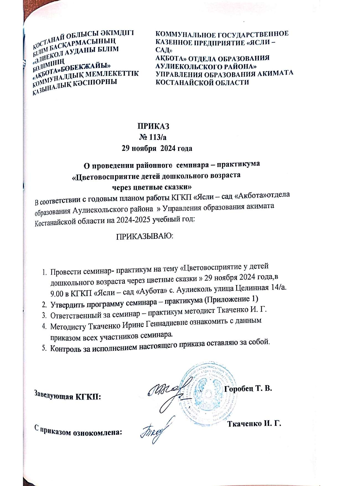
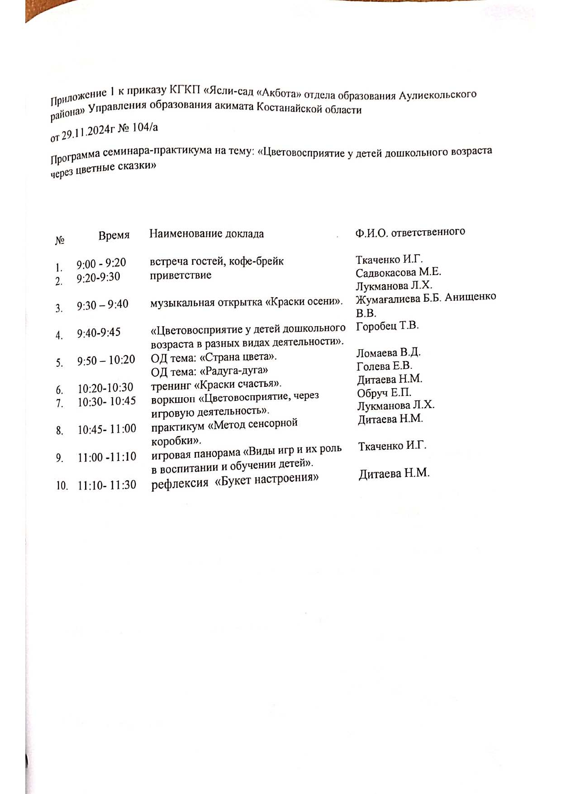
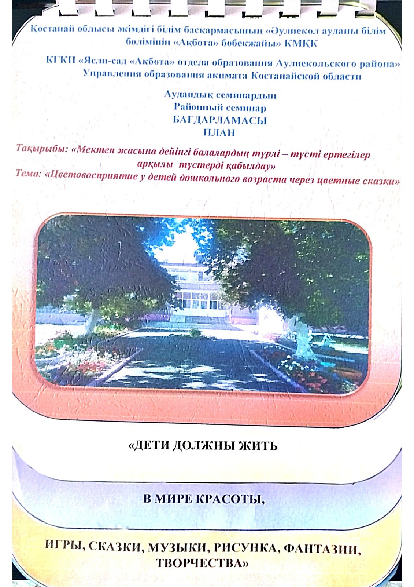
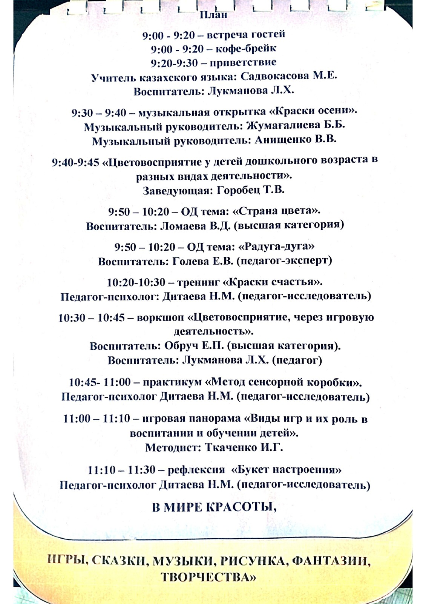

Информация по научно-педагогической деятельности
- обобщение педагогического опыта (авторские программы, учебно-методические комплексы, выписки протоколов к ним (при наличии), семинары, конкурсы, круглые столы, фестивали, в которых участвовал педагог, обобщение и распространение передового педагогического опыта);
Районный семинар-практикум 2024 год.




Воркшоп
"Цветовосприятия через игровую деятельность"
- исследовательская деятельность (публикации статей по результатам научных исследований, сведения о творческих отчетах, выступлениях на научно-практических конференциях);
Статья "Экологическая культура детей дошкольного возраста" Журнал "ІЛІМ.KZ",2025 год, №10.
- материалы по воспитательной работе (по экологическому, трудовому,
нравственному воспитанию и взаимодействию с родителями);
Проект "Медиаграммотность"
- Приказ
- Презентация,
- видео "История дружбы зайчонка Кузи и лисенка Маси",
- видео "Рисованная анимация Сказка репка"
- видео "Кукольная анимация сказки Теремок"
- видео "Экскурсия по группе "Радуга"
{kind=link}
Проект "Тілге бойлау"
- Приказ
- В рамках реализации проекта Тілге бойлау ребятами совместно с родителями была проведена выставка "Куклы в национальных нарядах"
- В рамках реализации проекта Тiлге бойлау ребятами была инсценирована сказка Репка
- В рамках пилотного проекта "Tілге бойлау"проведены национальные подвижные игры с детьми старшей группы "Радуга" и предшкольной группы "Солнышко".
- В рамках пилотного проекта "Тілге бойлау" семья Сексембаевых поиграла в игру "Сварим компот"
- Интервью с родителями о реализации проекта
{kind=link}
- за последние 3 (три) года (регулярное размещение информации на web
(веб)-ресурсах и в социальных сетях, бесплатное обучение детей - прикрепить
подтверждающие документы (материалы), ссылки в информационной системе.